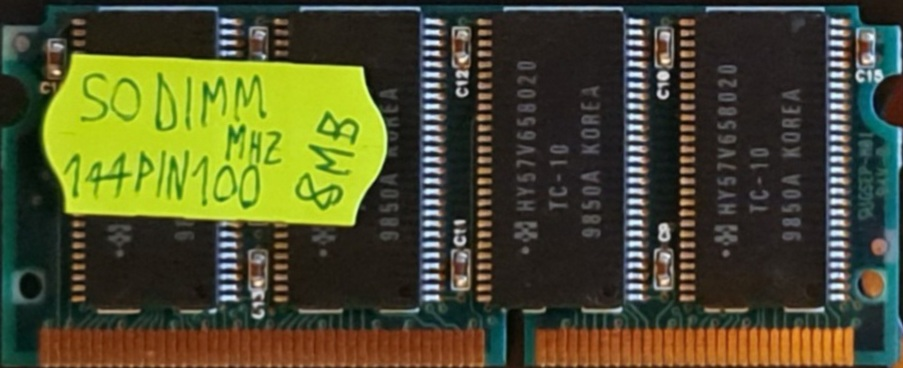
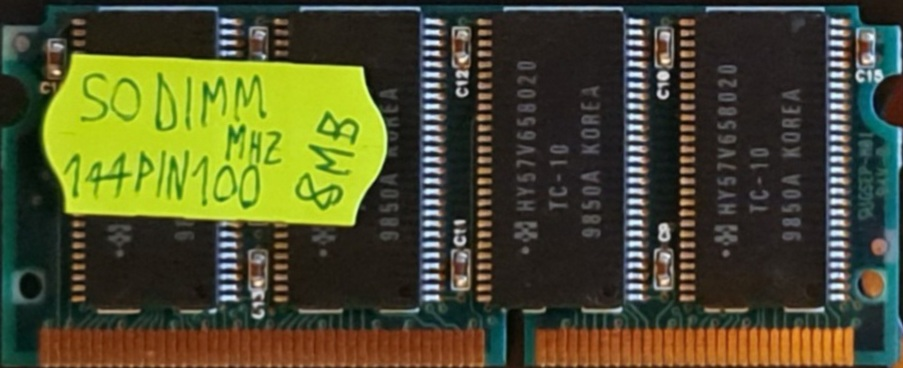

|
|
Home Chrome URLs Google Search Login Photo Gallery |
Last modified: 04.03.2024 17:36
A SO-DIMM or small outline DIMM, is a smaller alternative to a DIMM, being roughly half the physical size of a regular DIMM. The first SODIMMs had 72 pins and were introduced by JEDEC in 1997. Before its introduction, many laptops would use proprietary RAM modules which were expensive and hard to find.
source: Wikipedia (of course)


Micron MT8LSDT864HG-66283

Samsung M464S0924CT2-L75
2x HYM7V64401 TQG-10


 

With 8x Hynix/Hyundai HY57V658020 TC-10


Code is DIMM 7209864B0F109002DBK
Toshiba THL64V8015BTG-5


Chip code: M5M4V17805CTP